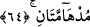
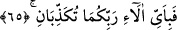

Anlatılan iki cennetten hangisini inkâr edersiniz?
64. Bu cennetler koyu yeşildirler.
İki cennetin vasfedilmesidir. Çok koyu olmasından dolayı siyah rengi ağır basmıştır.
İki cennet siyaha çalan yeşildir. Yeşile bakmak görme gücünü arttırır. Peygamberimiz
(s.a.)’in buyurduğu gibi, “Üç şey görme gücünü arttırır: Yeşil’e, akan suya ve güzel ve
sevimli yüz’e bakmak.”[182]
İbni Abbâs (r.a.) demiştir ki; iyi bir sürme türü olan taş sürme veya İsfahan
sürmesinin uyumadan önce gözlere sürülmesi çok faydalıdır. Kuru olan ve gözlere
serinlik veren bu sürme göze sürüldüğünde göz kaslarını güçlerdirdiği, gözleri bir çok
tehlike ve ağrılardan koruduğu, özellikle yaşlılara iyi geldiği söylenmiştir. Bu sürme ile
bir miktar misk karıştırılıp sürülürse çok faydalıdır. İç yağı ile bir miktar katran
karıştırılıp sürülürse ateş yanıklarında kanamayı ve burun kanını keser.
Bir hadisi şerifte: “Sürmelerinizin en iyisi taş sürmedir, tüyleri gürleştirir ve görme
gücünü arttırır” buyurulmuştur.[183] Harîdetü’l-acâib de de ifâde edildiği gibi.
Bu âyet-i kerîme’nin bildirdiğine göre, bu iki cennetin bütün alanları burcu burcu
kokan çiçek, gül, sümbül gibi bitkilerle donatılmış bir özelliğe sâhiptir. Aynı zamanda
önceki iki cennet, zümrüt gibi yemyeşil yapraklı ağaçlarla, meyvalarla ve bahçelerle
kaplıdır. Bu, önceki iki cennetin sonrakilerden daha üstün olduğunu gösterir.
et-Te’vilâtü’n-Necmiyye’de denilmiştir ki; bundan anlaşılıyor ki, bu iki cennetin
sâkini olanlara; kitapları sağ yanlarından verilenlere nebâtî kuvvetler galiptir. Önceki
iki cennetin sâhiplerine ise ruhanî kuvvetler galiptir. Bunlar da kullukta Allah’a yakın
olan bahtiyarlardır.
65. Öyleyken Rabbinizin hangi nimetlerini yalanlayabilirsiniz?
“Öyleyken Rabbinizin” bu iki cennetteki gözlerinizin seyrettiği muhteşem
yeşilliklerden, burunlarınızın kokladığı güzel kokulardan vb. “nimetlerinden hangisini
yalanlabilirsiniz?”
Fıkıh âlimleri demişlerdir ki; namazda bu 64. âyet gibi bir kelimeden ibaret bir âyet
okunduğunda veya Kâf, sâd ve nûn gibi bir harften ibaret bir âyet okunduğunda,
bazılarına göre bunların hepsi bir âyet ise de farz olan kırâet sahih olmaz. Çünkü
bunları okuyan “kârî” sayılmaz. Kırâet, “tertîl esnâsında harfleri ve kelimeleri yanyana